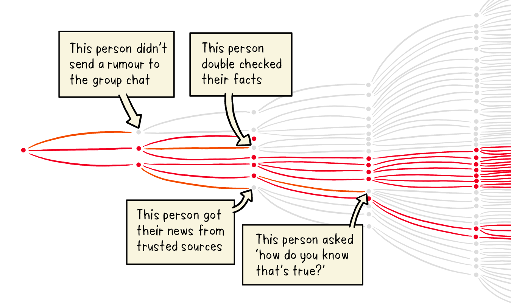
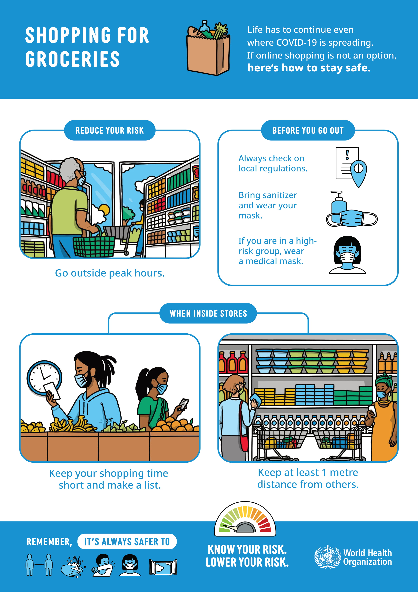

What to do to keep yourself and others safe from COVID-19
- Avoid the 3Cs: spaces that are closed, crowded or involve close contact. Outbreaks have been reported in restaurants, choir practices, fitness classes, nightclubs, offices and places of worship where people have gathered, often in crowded indoor settings where they talk loudly, shout, breathe heavily or sing. The risks of getting COVID-19 are higher in crowded and inadequately ventilated spaces where infected people spend long periods of time together in close proximity. These environments are where the virus appears to spread by respiratory droplets or aerosols more efficiently, so taking precautions is even more important.
- Beware of misinformation 
- Meet people outside. Outdoor gatherings are safer than indoor ones, particularly if indoor spaces are small and without outdoor air coming in. For more information on how to hold events like family gatherings , children’s football games and family occasions
- Avoid crowded or indoor settings but if you can’t, then take precautions: Open a window. Increase the amount of ‘natural ventilation’ when indoors. WHO has published Q&As on ventilation and air conditioning for both the general public and people who manage public spaces and buildings. Wear a mask . WHO
- While shopping for groceries 
- Regularly and thoroughly clean your hands with an alcohol-based hand rub or wash them with soap and water. This eliminates germs including viruses that may be on your hands.
- Avoid touching your eyes, nose and mouth. Hands touch many surfaces and can pick up viruses. Once contaminated, hands can transfer the virus to your eyes, nose or mouth. From there, the virus can enter your body and infect you.
- Cover your mouth and nose with your bent elbow or tissue when you cough or sneeze. Then dispose of the used tissue immediately into a closed bin and wash your hands. By following good ‘respiratory hygiene’, you protect the people around you from viruses, which cause colds, flu and COVID-19.
- Clean and disinfect surfaces frequently especially those which are regularly touched, such as door handles, faucets and phone screens.
- About Hydroxychloroquine
- Vitamin and mineral supplements cannot cure COVID-19
- Can People weak mask while exercising
- Water or swimming does not transmit the COVID-19 virus
- People of all ages can be infected by the COVID-19 virus
How to make your environment safer
Some Mythbusters

-supplements.png)


Infected ?
Checkout what to do according to WHO
Staying safe
Official guidelines from WHO
QnA
Have a doubt ? Maybe its already answered